Chapter 8 Non-Binary Treatments
require(TriMatch)
data(tutoring)
str(tutoring)## 'data.frame': 1142 obs. of 17 variables:
## $ treat : Factor w/ 3 levels "Control","Treat1",..: 1 1 1 1 1 2 1 1 1 1 ...
## $ Course : chr "ENG*201" "ENG*201" "ENG*201" "ENG*201" ...
## $ Grade : int 4 4 4 4 4 3 4 3 0 4 ...
## $ Gender : Factor w/ 2 levels "FEMALE","MALE": 1 1 1 1 1 1 1 1 1 1 ...
## $ Ethnicity : Factor w/ 3 levels "Black","Other",..: 2 3 3 3 3 3 3 3 1 3 ...
## $ Military : logi FALSE FALSE FALSE FALSE FALSE FALSE ...
## $ ESL : logi FALSE FALSE FALSE FALSE FALSE FALSE ...
## $ EdMother : int 3 5 1 3 2 3 4 4 3 6 ...
## $ EdFather : int 6 6 1 5 2 3 4 4 2 6 ...
## $ Age : num 48 49 53 52 47 53 54 54 59 40 ...
## $ Employment: int 3 3 1 3 1 3 3 3 1 3 ...
## $ Income : num 9 9 5 5 5 9 6 6 1 8 ...
## $ Transfer : num 24 25 39 48 23 ...
## $ GPA : num 3 2.72 2.71 4 3.5 3.55 3.57 3.57 3.43 2.81 ...
## $ GradeCode : chr "A" "A" "A" "A" ...
## $ Level : Factor w/ 2 levels "Lower","Upper": 1 1 1 1 1 2 1 1 1 1 ...
## $ ID : int 377 882 292 215 252 265 1016 282 39 911 ...table(tutoring$treat)##
## Control Treat1 Treat2
## 918 134 90# Histogram of unadjusted grades
tmp <- as.data.frame(prop.table(table(tutoring$treat, tutoring$Grade), 1))
ggplot(tmp, aes(x=Var2, y=Freq, fill=Var1)) +
geom_bar(position='dodge', stat='identity') +
scale_y_continuous(labels = percent_format()) +
xlab('Grade') + ylab('Percent') + scale_colour_hue('Treatment')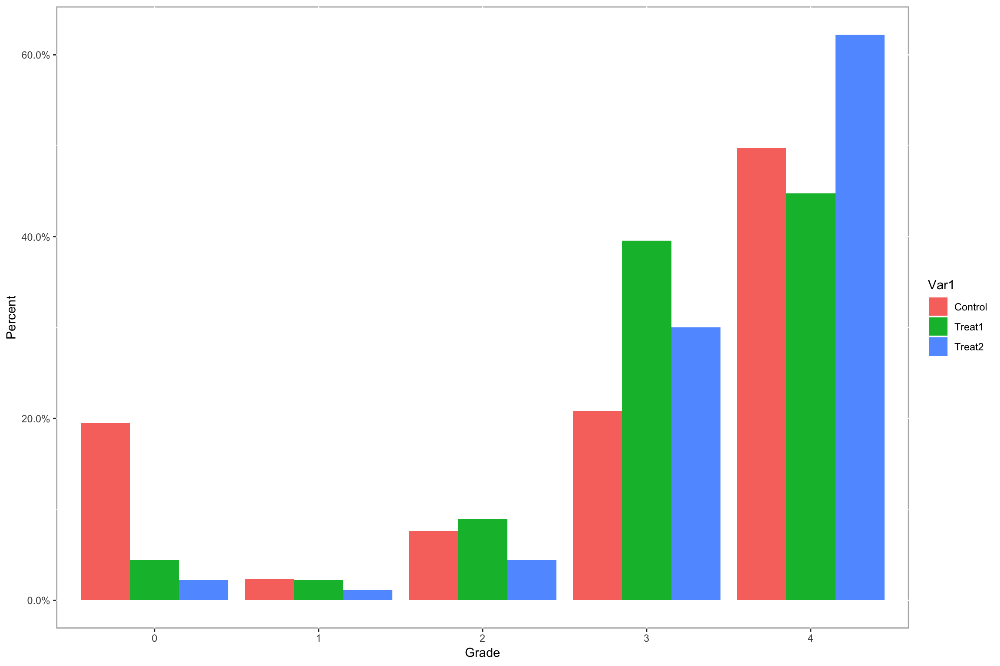
## Phase I
# Note that the dependent variable is not included in the formula. The TriMatch
# functions will replace the dependent variable depending on which pair is
# being modeled.
tutoring.formu <- ~ Gender + Ethnicity + Military + ESL + EdMother + EdFather +
Age + Employment + Income + Transfer + GPA
# trips will estimate the propensity scores for each pairing of groups
tutoring.tpsa <- trips(tutoring, tutoring$treat, tutoring.formu)
plot(tutoring.tpsa, sample=c(200))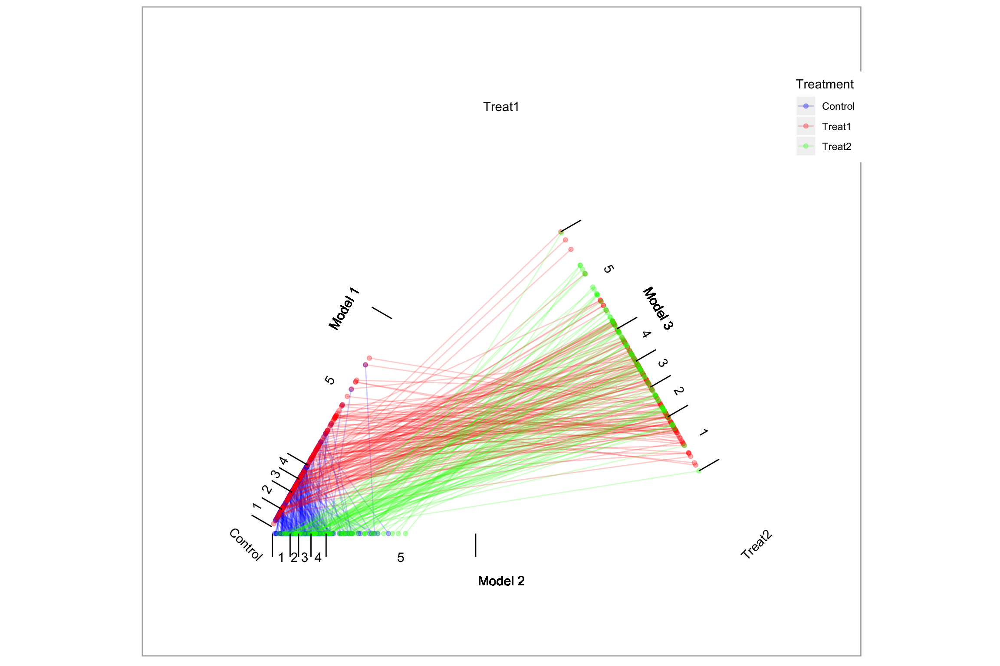
# trimatch finds matched triplets.
tutoring.matched <- trimatch(tutoring.tpsa)
# Partial exact matching
tutoring.matched2 <- trimatch(tutoring.tpsa, exact=tutoring$Level)
# Plotting the results of trimatch is a subset of the triangle plot with only
# points that were matched. There is also an additional parameter, rows, that
# will overlay matched triplets.
plot(tutoring.matched, rows=1, line.alpha=1, draw.segments=TRUE)
## Examine the unmatched students
unmatched <- unmatched(tutoring.matched)
summary(unmatched)## 819 (71.7%) of 1142 total data points were not matched.
## Unmatched by treatment:
## Control Treat1 Treat2
## 795 (86.6%) 17 (12.7%) 7 (7.78%)plot(unmatched)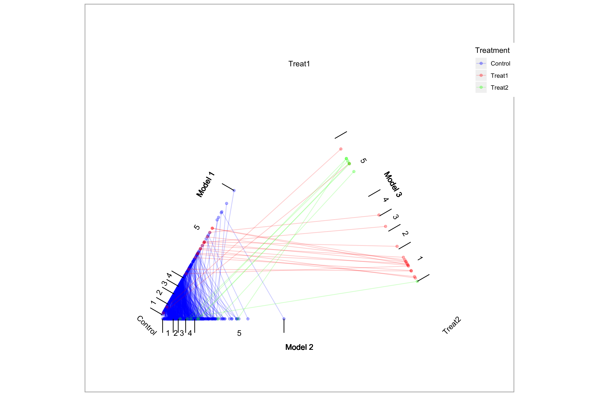
## Check balance
multibalance.plot(tutoring.tpsa)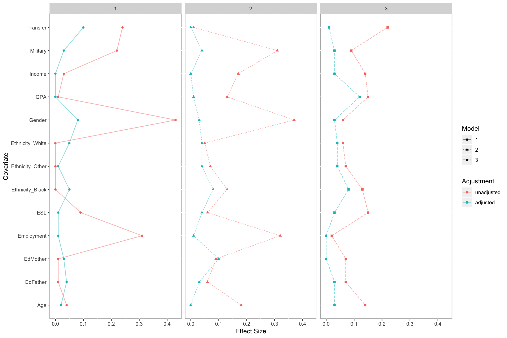
balance.plot(tutoring.matched, tutoring$Age, label='Age')##
## Friedman rank sum test
##
## data: Covariate and Treatment and ID
## Friedman chi-squared = 4.1498, df = 2, p-value = 0.1256
##
## Repeated measures ANOVA
##
## Effect DFn DFd F p p<.05 ges
## 2 Treatment 2 294 1.707234 0.1831598 0.006613137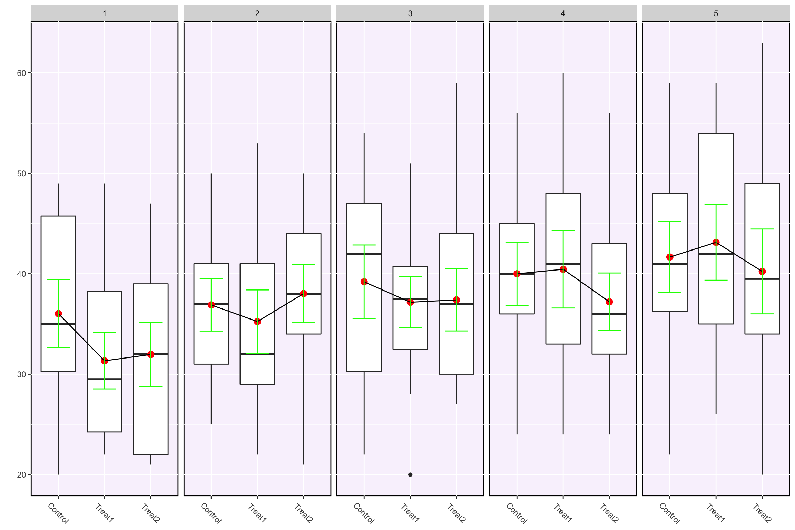
balance.plot(tutoring.matched, tutoring$Military, label='Military')##
## Friedman rank sum test
##
## data: Covariate and Treatment and ID
## Friedman chi-squared = 0.4, df = 2, p-value = 0.8187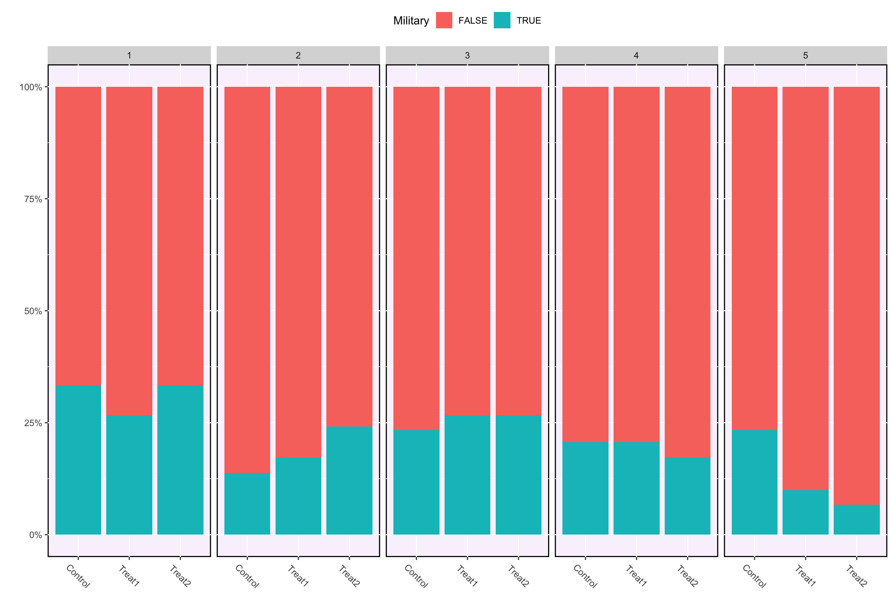
# Create a grid of figures.
bplots <- balance.plot(tutoring.matched, tutoring[,all.vars(tutoring.formu)],
legend.position='none',
x.axis.labels=c('C','T1','T1'), x.axis.angle=0)
bplots[['Military']] # We can plot one at at time.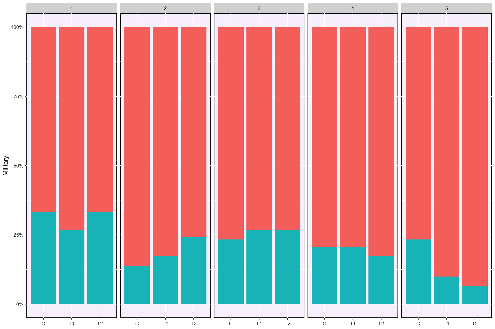
summary(bplots) # Create a data frame with the statistical results## Covariate Friedman Friedman.p Friedman.sig rmANOVA rmANOVA.p
## 1 Gender 2.16666667 0.33846543 NA NA
## 2 Ethnicity 0.05678233 0.97200807 NA NA
## 3 Military 0.40000000 0.81873075 NA NA
## 4 ESL 4.78571429 0.09136826 . NA NA
## 5 EdMother 1.55974843 0.45846368 0.76509335 0.4662146
## 6 EdFather 0.02794411 0.98612510 0.06102055 0.9408158
## 7 Age 4.14982578 0.12556736 1.70723419 0.1831598
## 8 Employment 2.04048583 0.36050736 1.27194067 0.2818249
## 9 Income 0.59582543 0.74236614 0.39251642 0.6757086
## 10 Transfer 3.08717949 0.21361291 0.55080160 0.5770812
## 11 GPA 1.37542662 0.50272433 0.49589373 0.6095348
## rmANOVA.sig
## 1 <NA>
## 2 <NA>
## 3 <NA>
## 4 <NA>
## 5
## 6
## 7
## 8
## 9
## 10
## 11plot(bplots, cols=3, byrow=FALSE)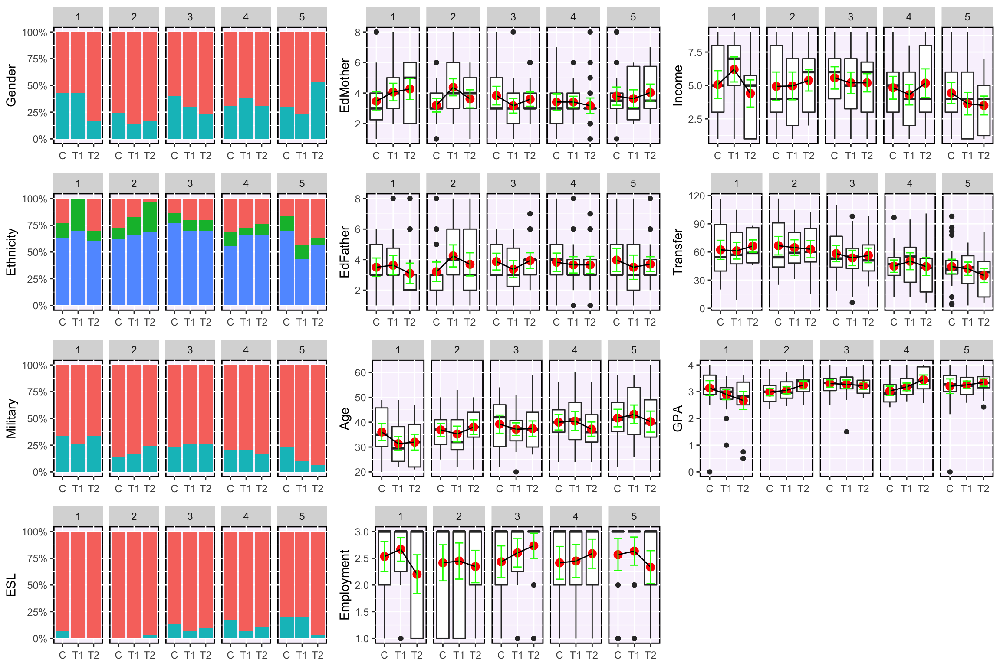
## Phase II
# The summary function performs a number of statistical tests including Friedman
# rank sum test, repeated measures ANOVA, and if one or both of those tests have
# p values less than 0.5 (the default, but configurable), then a pairwise Wilcox
# test and three paired t-tests will also be performed.
(sout <- summary(tutoring.matched, tutoring$Grade))## $PercentMatched
## Control Treat1 Treat2
## 0.1339869 0.8731343 0.9222222
##
## $friedman.test
##
## Friedman rank sum test
##
## data: Outcome and Treatment and ID
## Friedman chi-squared = 17.404, df = 2, p-value = 0.0001663
##
##
## $rmanova
## $rmanova$ANOVA
## Effect DFn DFd F p p<.05 ges
## 2 Treatment 2 294 16.66293 1.396209e-07 * 0.06818487
##
## $rmanova$`Mauchly's Test for Sphericity`
## Effect W p p<.05
## 2 Treatment 0.8668353 2.946934e-05 *
##
## $rmanova$`Sphericity Corrections`
## Effect GGe p[GG] p[GG]<.05 HFe p[HF]
## 2 Treatment 0.8824842 6.035469e-07 * 0.8923995 5.333417e-07
## p[HF]<.05
## 2 *
##
##
## $pairwise.wilcox.test
##
## Pairwise comparisons using Wilcoxon signed rank test
##
## data: out$Outcome and out$Treatment
##
## Treat1.out Treat2.out
## Treat2.out 0.0046 -
## Control.out 0.0165 1.9e-06
##
## P value adjustment method: bonferroni
##
## $t.tests
## Treatments t df p.value sig mean.diff
## 1 Treat1.out-Treat2.out -3.095689 147 2.351743e-03 ** -0.3378378
## 2 Treat1.out-Control.out 2.939953 147 3.813865e-03 ** 0.4459459
## 3 Treat2.out-Control.out 5.443253 147 2.140672e-07 *** 0.7837838
## ci.min ci.max
## 1 -0.5535076 -0.1221681
## 2 0.1461816 0.7457103
## 3 0.4992224 1.0683452
##
## attr(,"class")
## [1] "trimatch.summary" "list"ls(sout)## [1] "friedman.test" "pairwise.wilcox.test" "PercentMatched"
## [4] "rmanova" "t.tests"# TODO: boxdiff.plot(tutoring.matched, tutoring$Grade, ordering=c('Treatment2','Treatment1','Control'))
parallel.plot(tutoring.matched, tutoring$Grade)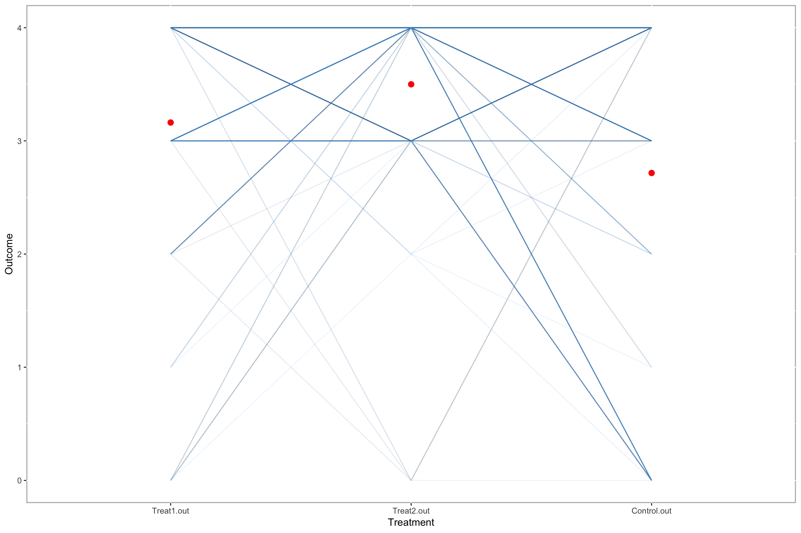
# The Loess plot is imperfect with three sets of propensity scores. There is a
# model parameter to specify which model to use. Once we a model is selected
# we have propensity scores for two of the three groups. We impute a propensity
# score on that model's scale for the third group as the midpoint between
# the other two propensity scores that unit was matched to.
loess3.plot(tutoring.matched, tutoring$Grade, se=FALSE, method='loess')
# Turn on 95% confidence interval (see also the level parameter)
loess3.plot(tutoring.matched, tutoring$Grade, se=TRUE, method='loess')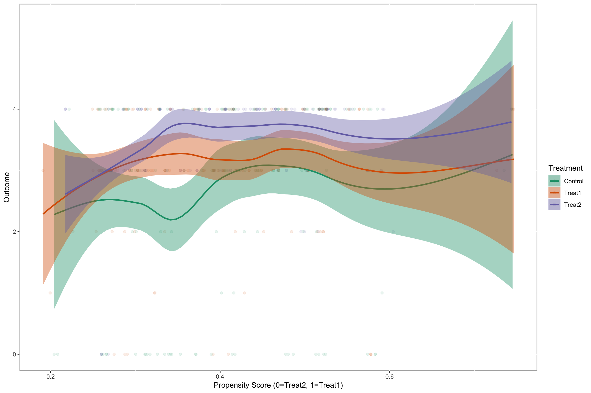
# We can also pass other parameters to the loess function.
loess3.plot(tutoring.matched, tutoring$Grade, se=TRUE, method='loess', span=1)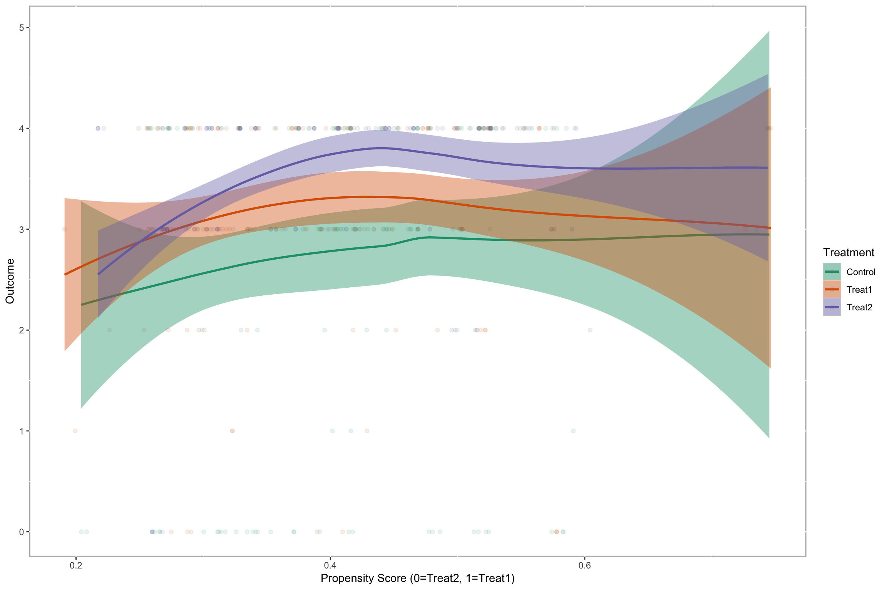
# This is a busy plot, but since all the lines are practically vertical, the
# distance between each pair of propensity scores is minimal.
loess3.plot(tutoring.matched, tutoring$Grade, se=FALSE, method='loess',
plot.connections=TRUE)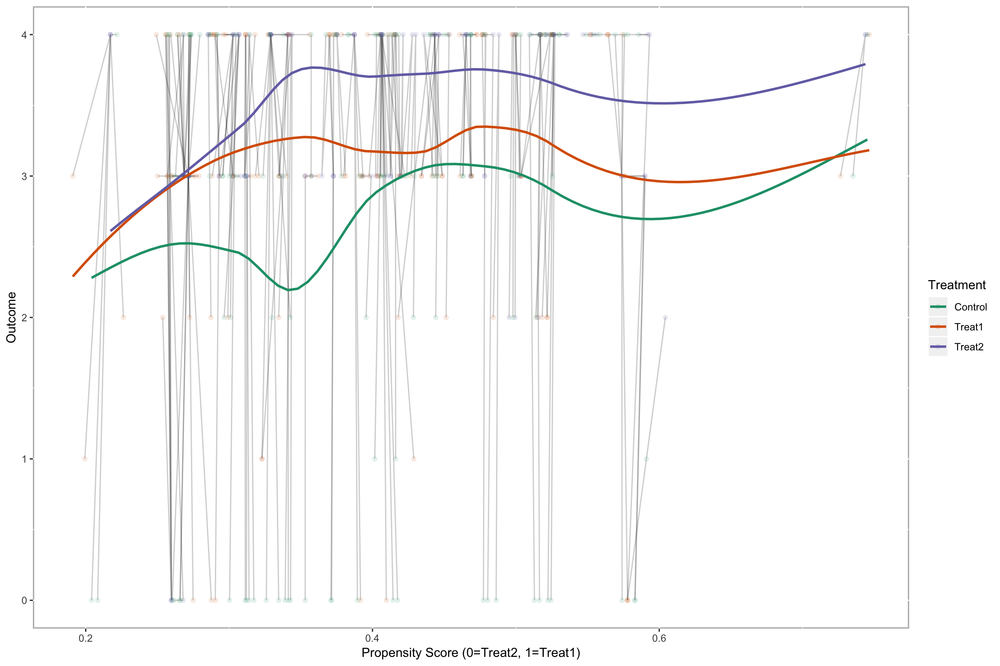
# The merge function will add the outcome to the matched triplet data frame.
# This is useful for other approaches to analyzing the matched triplets.
tmatch.out <- merge(tutoring.matched, tutoring$Grade)
head(tmatch.out)## Treat1 Treat2 Control D.m3 D.m2 D.m1 Dtotal
## 1 368 39 331 0.007053754 0.001788577 0.0103932229 0.01923555
## 2 800 1088 1105 0.018477707 0.000736057 0.0001821526 0.01939592
## 3 286 655 853 0.016859948 0.004237243 0.0019476652 0.02304486
## 4 158 279 365 0.003373585 0.009530680 0.0107118774 0.02361614
## 5 899 209 100 0.001929173 0.013633300 0.0091835718 0.02474604
## 6 1034 791 484 0.010538949 0.008541671 0.0092350273 0.02831565
## Treat1.out Treat2.out Control.out
## 1 4 4 0
## 2 4 4 3
## 3 2 4 4
## 4 4 4 4
## 5 4 3 4
## 6 4 4 4